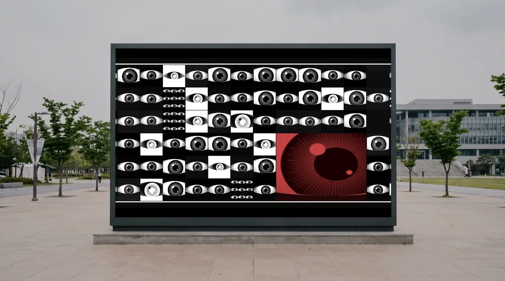

LED 전광판 설치는 어떤 공사인가요?
LED 전광판 설치는 화면을 이루는 LED 모듈을 벽면이나 구조물에 고정하고, 배선·전원·제어기를 연결해 하나의 화면으로 동작하게 만드는 공사입니다. 크게 ① 화면 사양 산정 ② 구조 보강과 프레임 시공 ③ 모듈 설치와 배선·전원 계통 연결 ④ 제어기·플레이어 연결과 화면 보정 순서로 진행합니다. 오늘은 봄날은 이 시공과 화면에 올릴 콘텐츠 제작을 한 계약으로 수행합니다.
LED 전광판 설치는 화면을 이루는 LED 모듈을 구조물에 고정하고 배선·전원·제어기를 연결해 하나의 화면으로 동작하게 만드는 공사입니다. 화면 사양 산정, 구조 보강과 프레임 시공, 모듈 설치와 배선, 제어기 연결과 화면 보정 순서로 진행합니다.
오늘은 봄날은 대구광역시 수성구에 사업장을 둔 여성기업으로, 이 시공과 화면에 올릴 콘텐츠 제작을 한 계약으로 수행합니다. LED 화면은 다는 것으로 끝나지 않고 무엇을 트느냐가 남는데, 대부분의 발주에서 그 두 가지가 다른 업체로 쪼개집니다. 오늘은 봄날에서는 쪼개지지 않습니다.



Types
보는 거리와 설치 위치에 따라 화면 사양이 달라집니다.
| 로비 LED 미디어월 | 관공서·기업 로비의 대형 상시 화면. 가까이서 보기 때문에 픽셀 간격이 촘촘해야 합니다. 대구학생문화센터 로비 LED 월이 이 형태입니다. |
|---|---|
| 건물 외벽 LED 전광판 | 멀리서 스쳐 보는 대형 화면. 주간 시인성을 위한 밝기와 옥외 방수·방진, 구조 보강이 관건입니다. 구미코 외벽 LED가 이 형태입니다. |
| 세로형 LED 사이니지 | 안내 사이니지 겸용 세로 화면. 기존 안내 화면을 미디어아트 화면으로 함께 운용합니다. 구미코 로비 사이니지가 이 형태입니다. |
| 기존 패널 활용 | 이미 설치된 화면이 있으면 그 해상도와 입력 규격에 맞춰 콘텐츠만 제작합니다. 화면을 새로 살 필요가 없습니다. |
Process
화면 크기, 최소 시야 거리, 주변 밝기, 전기 용량, 설치면 하중을 확인해 픽셀 피치와 밝기, 전력 용량을 정합니다.
화면 하중을 받을 구조를 보강하고 프레임을 시공합니다. 옥외는 방수·방진과 배수 경로까지 함께 봅니다.
LED 모듈을 설치하고 배선·전원 계통을 연결한 뒤 제어기와 플레이어를 붙여 화면을 보정합니다.
설치된 화면 규격 그대로 미디어아트를 제작해 올리고, 계절·행사에 맞춰 교체 운영합니다. 이상이 생기면 원격으로 조치합니다.
FAQ
담당자분들이 발주 전에 가장 많이 확인하시는 내용입니다.
LED 전광판 설치는 화면을 이루는 LED 모듈을 벽면이나 구조물에 고정하고, 배선·전원·제어기를 연결해 하나의 화면으로 동작하게 만드는 공사입니다. 크게 ① 화면 사양 산정 ② 구조 보강과 프레임 시공 ③ 모듈 설치와 배선·전원 계통 연결 ④ 제어기·플레이어 연결과 화면 보정 순서로 진행합니다. 오늘은 봄날은 이 시공과 화면에 올릴 콘텐츠 제작을 한 계약으로 수행합니다.
보는 거리와 화면 크기가 사양을 결정합니다. 사람이 가까이서 보는 로비 미디어월은 픽셀 간격이 촘촘해야 글자와 형태가 깨지지 않고, 멀리서 스쳐 보는 건물 외벽 전광판은 그만큼 촘촘할 필요가 없습니다. 실측에서 화면 크기, 최소 시야 거리, 주변 밝기, 전기 용량, 설치면 하중을 확인한 뒤 픽셀 피치와 밝기, 전력 용량을 산정해 견적서에 반영합니다.
가능합니다. 기존 LED 패널·미디어월·정보게시대의 해상도와 입력 규격에 맞춰 미디어아트를 제작하므로 화면을 새로 살 필요가 없습니다. HDMI 입력을 받는 화면이면 플레이어만 연결하면 됩니다. 실측 단계에서 기존 패널의 해상도와 입력 규격, 재생 장비를 확인한 뒤 제작 사양을 확정합니다.
오늘은 봄날은 대구광역시 수성구에 사업장을 둔 여성기업입니다. 대구·경상북도를 우선으로 부산광역시·경상남도·울산광역시까지 시공하며, 대구 안에서는 실측과 설치, 설치 후 대응을 당일에 처리할 수 있습니다. 공공기관 우선구매 대상 여성기업이고 직접생산확인증명서를 보유해 중소기업자간 경쟁입찰에도 바로 참여합니다.
설치와 콘텐츠 제작이 한 계약입니다. LED 화면은 켜 두면 끝이 아니라 무엇을 트느냐가 남는데, 그 화면에 올릴 미디어아트를 오늘은 봄날이 직접 제작합니다. 코드로 만들기 때문에 설치된 화면의 해상도와 비율에 맞춰 그대로 출력할 수 있고, 계절·행사에 따라 콘텐츠를 교체 운영합니다. 시안 3종은 요청 후 1주일 이내에 나옵니다.
상영 스케줄 관리와 이상 발생 시 원격 조치가 계약에 포함됩니다. 담당자가 화면 앞에 갈 일이 생기지 않도록 원격으로 처리하는 것이 기본이고, 원격으로 해결되지 않는 문제는 현장에서 대응합니다.
여기에 없는 내용은 010-4292-1999 또는 studio@publicbloom.art으로 문의해주세요. 접수 후 24시간 이내에 연락드립니다.
설치 장소와 벽면 · 화면 크기, 일정만 알려주시면 실측 후 회계연도 기준 견적서를 보내드립니다. 여성기업 확인서와 직접생산확인증명서를 함께 발행합니다.